Prompt提示詞
你給 AI 的問題、任務說明與要求。
使用要點說明目標、提供相關材料；回答不合用時，指出需要調整的部分。
看例子：Prompt
你可能看到「改一下 prompt」。例如把「幫我讀這篇」補成「我不懂第二段，請用一個例子解釋」。補上真正缺少的資訊，比把句子寫長更有用。
不用背定義。先看核心概念；延伸詞彙遇到時再查。
需要理解，並在後續練習中實際運用。
你給 AI 的問題、任務說明與要求。
使用要點說明目標、提供相關材料；回答不合用時，指出需要調整的部分。
你可能看到「改一下 prompt」。例如把「幫我讀這篇」補成「我不懂第二段，請用一個例子解釋」。補上真正缺少的資訊，比把句子寫長更有用。
模型這次回答時能參考的訊息與材料。
使用要點提供重要原文，確認工具讀到了哪些內容，不假設它已看過你的檔案。
你可能看到「上下文太長」。能容納的內容有限，長對話可能省略細節；換新對話時，核對帶過去的摘要，並重新提供重要原文與要求。
AI 說得像真的，內容卻不正確或沒有根據。
使用要點將準備採用的主張與關鍵數字回原始來源核對。
例如編出不存在的論文、錯誤數字或假的連結。看到重要事實，回原始來源核對；有引用也要確認原文是否真的支持它的說法。
能使用工具、分步執行任務，根據結果繼續處理的 AI。
使用要點先限定可處理的範圍，保留原始檔案，完成後核對輸出。
例如把幾份課程文件整理成作業清單，存成檔案再檢查。交辦前要說清可處理的範圍，完成後打開成果核對。
遇到時再查，不必先讀完。
讓機器執行辨識、預測、生成等任務的技術統稱。
你可能看到「這個軟體有 AI 功能」。這是大範圍的說法，還要看它實際能幫你做什麼。生成式 AI 是其中一類。
能產生文字、圖片、聲音等內容的 AI。
你可能在學校規則看到「generative AI」。聊天、生成圖片都可能在討論範圍內；能產生內容，不代表內容一定正確。
處理與生成語言的模型，是許多聊天工具背後的核心。
LLM 是 Large Language Model 的縮寫。看到「這個 App 使用哪個 LLM？」是在問背後的模型；App 還可能另外提供搜尋、讀檔等工具。
用資料更新模型本身，讓模型的行為改變；把背景或文件貼進聊天是提供 Context，不是訓練。
例如告訴 Gemini「我是都市計畫研究生，請用初學者能懂的方式解釋 GIS」，這是在提供這次工作的 Context。只有真的用資料去更新模型本身時，才是在談 training 或 fine-tuning。
能處理不只一種形式的材料，例如文字、圖片或聲音。
你可能看到「支援多模態」。例如讓 AI 看講義照片、聽錄音；實際支援哪些格式要看工具，提供後也要抽查有沒有讀對。
模型處理內容的單位；文字會分成字、單字或片段。
你可能看到「token 上限」，通常是在說模型能處理的內容量限制。不必自己計算；遇到限制時看實際提示，檔案大小與方案用量也可能另有限制。
遇到問題時，找接近的情境，看看可以怎麼開始。
先把卡住的內容貼給對話型 AI；要反覆閱讀同一批文獻、講義或錄音，再用 Gemini Notebook。查找資料時，請它附上原始來源。
先用你熟悉的對話型 AI，提供題目或草稿，說明你卡在哪裡。
把畫面或錯誤訊息提供給對話型 AI，補上軟體名稱、版本和你想做的事。
不用背答案。先在心裡選一個，再打開看判斷依據。
判斷依據：Gemini Notebook。核心工作是圍繞一批指定來源閱讀、比較與回查，不是讓 Agent 操作檔案。最後仍要打開原文確認引用真的支持你的說法。
判斷依據：這是在提供 Context。你是在告訴既有模型這次工作要參考什麼；模型本身沒有因此被重新訓練。
判斷依據：回原始來源核對。有 citation 不等於 citation 支持整句話；先確認作者、年份、數字、研究對象與原文語意，再決定能不能使用。
判斷依據：Agent。這已經不是只要答案，而是要 AI 實際處理檔案。先保留 raw data、限定工作範圍，讓它說明方法，再核對輸出。
需要時再查：AI 使用規範與申報、參考文獻與引用格式、提示詞範例。
工具名稱會變。這章先拆開一個 AI 工具的三層，再分辨它現在是在生成、搜尋、計算，還是操作檔案；不同工作要用不同方式檢查。
同一顆 AI 腦，換一個 Harness 就是不同工具。同樣用 Gemini 模型：在 Gemini 裡聊天、上網查；在 Gemini Notebook 裡主要根據你放的來源回答並附引用；在 Antigravity 裡讀寫檔案、執行程式。手冊開頭的「聊和查、讀、動手」，差別主要就在 Harness。
| 工作類型 | 例子 | 怎麼檢查 |
|---|---|---|
| 生成憑記憶和材料寫回答，流暢但可能編造 | 解釋概念、改寫句子、擬一封信 | 重要事實回原文核對；看摘要有沒有改變意思 |
| 搜尋用搜尋工具找網頁，再整理成回答 | 今年的官方公告、政策原文、最新數字 | 打開來源核對年份與適用地區；沒提供來源就請它補充，不把回答當已查證 |
| 計算用計算器、試算表或程式算出精確數值 | 加總預算、換算租金、計算比例 | 核對輸入、公式與單位，再自己抽算一筆；程式跑完也可能算錯 |
| 操作用工具讀寫檔案、執行程式、跑多步任務 | 整理 CSV、產生圖表、批次處理檔案 | 限定工作範圍、保留原檔，完成後看變更並驗收輸出 |
先說目標、給相關材料，就能開始。下面兩套積木幫你找缺少的資訊：先試簡短版本，看回答哪裡不合用，再補一塊重試。不必填滿，也不用背順序。
Context 是這次工作時 AI 能參考的背景與材料；把履歷、作業要求或文件貼進來，通常是在提供 Context。Training 才是用資料更新模型本身。
還說不清楚也能開始：「我想做到[目標]，目前卡在[困難]。請先問我一個問題，幫我釐清下一步。」
改動只留在這次瀏覽，重新整理會還原成範例；改好請先複製。
| 遇到的問題 | 下一句可以怎麼說 |
|---|---|
| 解釋太難 | 「我不懂的是這一句：[貼上句子]。請用一個具體例子解釋，保留重要英文名詞。」 |
| 回答太空泛 | 「請根據我附的材料，指出可以修改的三個地方，並說明理由。」 |
| 方向不對 | 「我要比較兩個方案，不是分別介紹。請按成本、時間與限制改成比較表。」 |
| 操作失敗 | 「我想做到[目標]，使用[軟體與版本]，做了[操作]，出現[錯誤訊息]。請先幫我判斷原因，再給一個可確認的小步驟。」 |
| 對話太亂 | 「請把這段對話整理成一段摘要：我的目標、已確認的結論、我提供過的材料、下一步。只列事實。」核對摘要後貼到新對話，重要原文與檔案也重新提供。 |
先寫你要 AI 做什麼，再清楚標示「以下是原文／資料」。不必背特殊符號；重點是讓要求與待處理材料有明確邊界。
使用 Gemini Notebook (原 NotebookLM)，圍繞講義與文獻提問。先用一篇短文走完四步，再自己說明哪些結論有依據。短到一頁的東西，直接貼給對話型 AI 也行。
本文的 Gemini 指一般對話；Gemini Notebook 指圍繞指定來源工作的筆記本工具。
[1] A library extended its evening opening hours for four weeks. During the trial, evening visits rose from 120 to 180 per week.
[2] In a voluntary survey of 40 visitors, 30 said the later closing time helped them study. The survey did not include people who did not visit the library.
[3] Staff recommend continuing the extended hours. However, the trial took place during exam season, and no comparison library was studied. The results do not establish whether longer opening hours improved students’ grades.
新建筆記本，新增來源時選「複製的文字」，貼上短文。然後照這張表問，重要結論回原文對。短來源可能只引用整篇，此時用 [1]–[3] 段落編號自行定位。
| 目的 | 可以這樣問 | 對照這篇原文 |
|---|---|---|
| 1 抓大意 | 「只根據這篇短文，用兩句中文說明發生什麼事、作者建議什麼。不要補外部資訊。」 | 延長開館期間晚間造訪增加；工作人員建議繼續。這還不是成效的因果證明。 |
| 2 解釋卡住的地方 | 「voluntary survey 是什麼？為什麼沒有訪問未到館的人會影響解讀？」 | 自願填答者可能與未填答者不同；結果不能直接代表所有學生。 |
| 3 分開主張與證據 | 「列出作者的建議、支持它的數據、研究限制，各附段落編號。」 | 建議在 [3]；造訪數在 [1]；問卷在 [2]；考試季與缺乏比較對象在 [3]。 |
| 4 回原文查證 | 「文中有證明延長開館讓成績進步嗎？請指出原文，不要推測。」 | [3] 明確說不能建立這個結論。看到「使」「讓」「導致」「證明」這類字，回原文。若它說「成績改善」，回覆：「第 3 段說沒有建立這個結論，請修正摘要，分清觀察到的變化與尚未證明的原因。」 |
先用一個樣本判讀練習確認「百分比代表誰」，再用下方原始 PDF 練習查證主張。需要時才展開，不必一次做完。
先判斷：40 位自願填答的訪客中，30 位認為延後閉館有助讀書。可以寫成「75% 的學生支持延長開館」嗎？
用自己的話說明：75% 的分母是誰？如果想了解全校學生的意見，還缺什麼資料？
實際使用：請 AI 列出資料的調查對象、樣本如何選出、沒有涵蓋哪些人，再回原文核對。
「延長開館提升了學生的學業成績。」
(Lin & Carter, 2026, p. 2)先不要看答案。直接回到原始來源第 2 頁，找它真正觀察了什麼、又明確說不能證明什麼。
這份 PDF 是本站自製的虛構教學材料，不是真實研究；用途是練習「回原文判斷 citation 是否真的支持主張」。
先不看上表的答案，也先不問 AI：有人說「75% 的學生支持延長開館，而且延長開館提升了成績」。這句話哪裡超出證據？請用自己的話改寫，指出還需要什麼資料。
就是上面兩段練習的結論合在一起：75% 只描述 40 位自願填答的到館者；原文沒有證明成績改善。要談全體學生，需要更有代表性的調查；要談成績，需要成績資料與比較設計。
再找一段自己的材料，用同樣方式分開「觀察到什麼」和「還不能說什麼」。最後請 AI 挑戰你的解讀，回原文決定要不要修改。
書目資料回原論文或出版頁取得，再請 AI 協助檢查課程要求的引用格式；不要讓它猜缺少的作者、年份或篇名。Gemini Notebook 的引用方便回查，正式參考文獻仍需完整書目資料。
語音導覽、心智圖、資訊圖表、簡報與報告可以當作複習或表達的輔助。功能與介面會變；使用時只選真正有幫助的一種，生成後仍回來源核對重要內容。
自訂語音導覽、資訊圖表或簡報時要填什麼，第 09 章「提示詞範例」有可以直接改的範例。
Agent 會在你的資料夾裡動手做事。你不用會寫程式，但要會講範圍、會驗收。先看一個示意，再真的交辦一次。
不是只回一句答案，而是能讀檔、使用工具、分步執行，再依結果繼續處理。因為它真的會動手，所以要限定範圍、保留原檔、完成後驗收。
示意情境：手上有三份課程 PDF，作業要求散在不同頁，你想要一份依日期排序、附來源頁碼的表格。下方示意 AI 如何整理，你可以按「下一步」查看過程。
問：「我可以怎麼整理作業截止日？」
得到欄位與整理方法，再由你開文件、抄資料、排序和存檔。
它沒停下來等你？先按停止，再請它列出已做的改動；核對原檔與輸出後，決定保留、修正或用備份重來。它說「已完成」？打開實際檔案核對，不只看那三個字。
Codex 或 Claude Code 都可以；用你目前可用的一個，不必同時學兩套介面。
以下為虛構流程示意，按鈕不會真的讀檔或連接 AI。
各家都把自己的 AI 模型放進好幾種介面。模型就是 03 章說的 AI 腦；另外四種是你跟它互動的地方。點圖可以放大。
| 系列 | AI 模型 | 網頁版 | 桌面版(Agent) | IDE 版(整合開發環境) | CLI 版(指令) |
|---|---|---|---|---|---|
| ChatGPTOpenAI | GPT-6 AstraGPT-5.6 Sol | 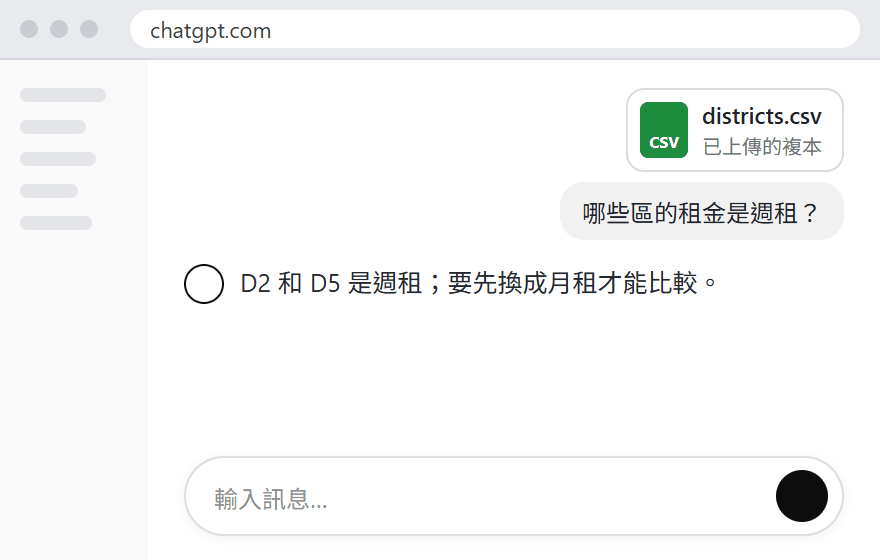 | 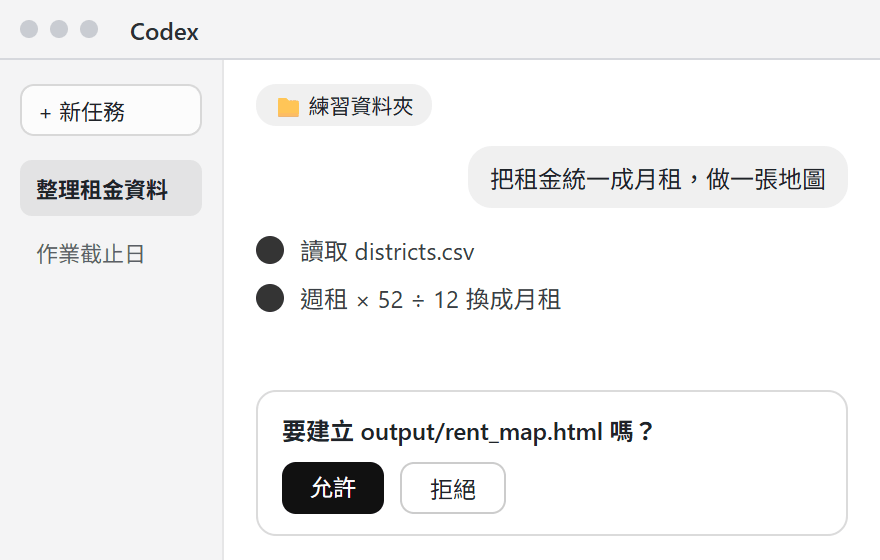 | 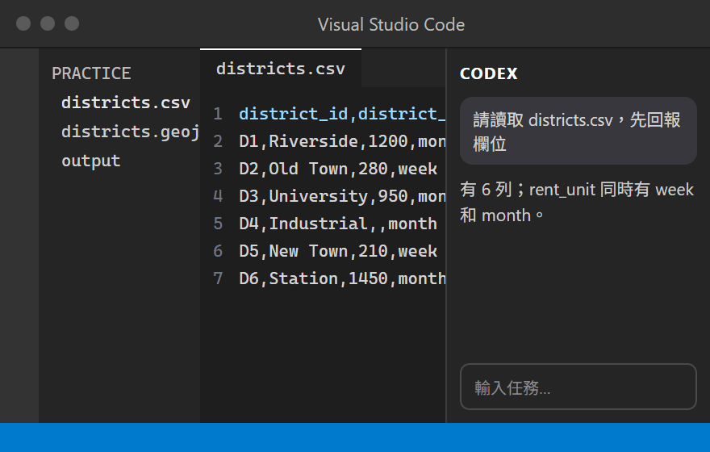 | 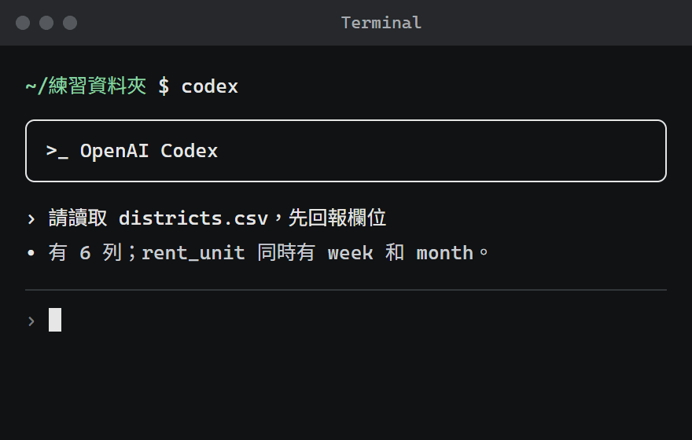 |
| ClaudeAnthropic | Claude Fable 5.1Claude Opus 5Claude Sonnet 5 | 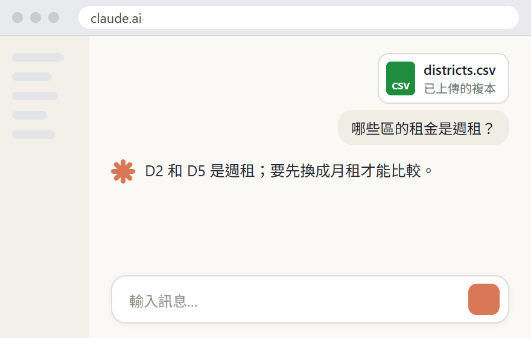 | 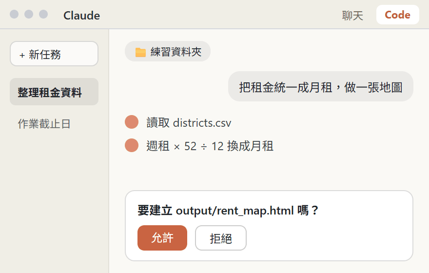 | 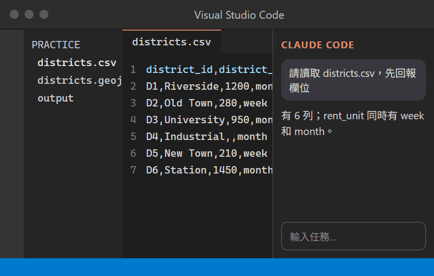 | 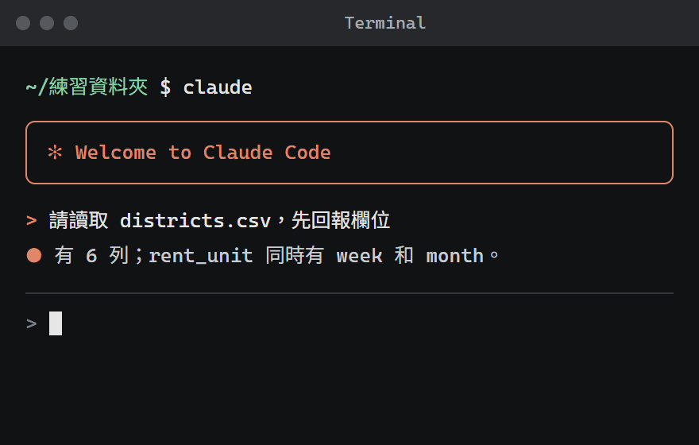 |
| GeminiGoogle | Gemini 3.1 ProGemini 3.8 Flash | 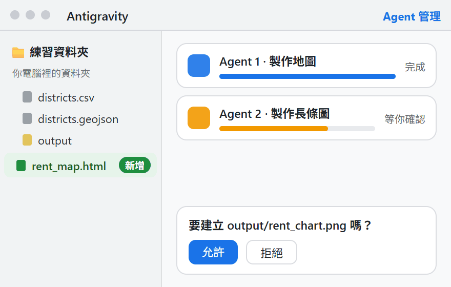 | 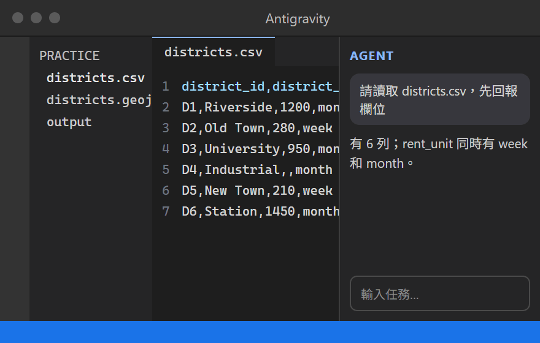 | 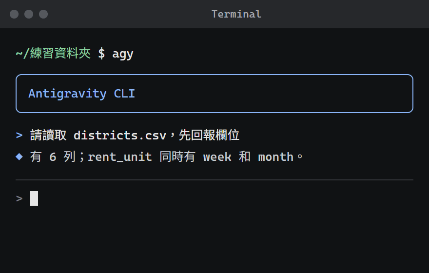 |
ChatGPT、Claude、Gemini 也有桌面聊天 App，聊天功能跟網頁版一樣；這張表的桌面版，指的是會在資料夾裡動手的 Agent App。
你會用到的：聊和查用網頁版或手機 App，Agent 用桌面版(綠底的兩種)。IDE 版和 CLI 版是同一個工具換個介面；教學影片裡出現 VS Code 或黑色視窗，知道是同一個工具就好。
圖為示意，不是各家的真實畫面；介面常改版，實際以你打開的版本為準。模型名稱查核於 2026 年 9 月；之後以工具裡的模型選單為準。
手機上可以先看流程、修改與複製任務說明；下方需要讀寫資料夾的練習，請回到 Mac 使用 Codex 或 Claude Code 完成。
介面名稱會變，方法不變。需要安裝時回官方入口：Codex、Claude Code。
你想比較六個區域的租金，但手上只有表格。這個示範會讓 Codex 或 Claude Code 讀取資料、統一租金單位，再製作圖表。你負責說明需求、確認結果。
完成後會得到：一份整理好的租金表、一張比較高低的長條圖，以及一張用顏色表示租金的示意地圖。材料與區域都是虛構的。
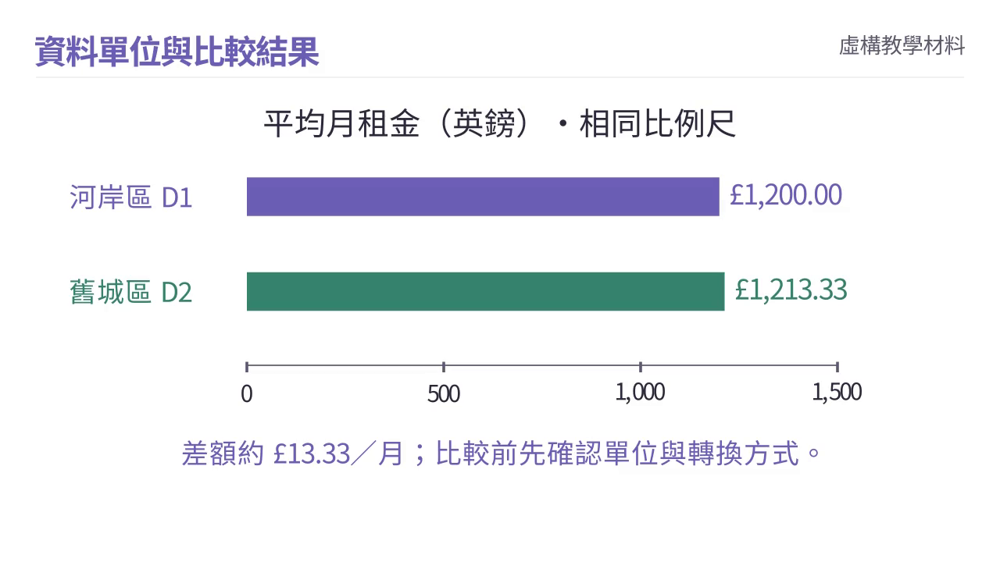
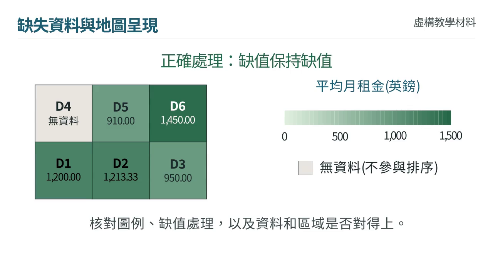
在電腦建立一個練習資料夾，把下面三個檔案下載到裡面(整包下載會自動解壓成資料夾)，再用 Codex 或 Claude Code 開啟這個資料夾。檔案已準備好，不需要先學會製作這些格式。
整包下載(三個檔案)下載租金表(districts.csv)下載區域形狀(districts.geojson)下載資料說明(data-dictionary.txt)
展開下方文字，按「複製」，貼進剛才開啟的 Codex 或 Claude Code 對話。它會先查看資料並回報，等你確認後才開始製作。
# 目標 把 districts.csv 的租金統一成每月單位，做成一張依月租金上色的地圖和一張長條圖，讓我在瀏覽器打開就能看。 # 材料與範圍 只處理這個資料夾裡的 districts.csv 和 districts.geojson。座標是抽象格網，不需要底圖。 # 可以改什麼、不能改什麼 不要修改原始檔。所有輸出放到 output 資料夾。缺值保持缺值，不要推測補值。 # 先做多小的一步 先只讀取檔案，回報欄位、筆數、單位、缺值，以及 CSV 和邊界檔的 district_id 是否對得上。 # 什麼時候停下來問我 回報之後停下來，等我確認處理方式再動手。 # 驗收條件 輸入輸出都是 6 筆；每週租金 × 52 ÷ 12 換成每月，保留兩位小數；新增 rent_monthly_gbp 欄位，原欄位保留；地圖上無資料的區要標示；完成後列出你做過的每個轉換。
它應該讀到六個區域：有的租金按週、有的按月，D4 沒有租金資料。確認它會統一成月租、保留缺值與原始檔後，回覆「請繼續製作」。若回報不符，先請它重新確認資料。
完成後，請它告訴你怎麼開啟 output 資料夾裡的圖表。看各區租金是否能比較、沒有資料的區域是否清楚標示；需要對數字時，再展開下方參考結果。
| 檢查項目 | 預期結果 |
|---|---|
| 輸入／輸出筆數 | 6／6，沒有默默刪除資料 |
| D2 每週 280 英鎊 | 280 × 52 ÷ 12 ≈ 1213.33 英鎊／月 |
| D5 每週 210 英鎊 | 210 × 52 ÷ 12 = 910.00 英鎊／月 |
| D4 缺值 | 兩個租金欄位都保持缺值；地圖標示無資料 |
| 原始欄位 | 全部保留，新增 rent_monthly_gbp |
| 地圖顏色順序 | D6 > D2 > D1 > D3 > D5，D4 無資料 |
| 原始檔 | 未被修改，輸出在 output 資料夾 |
下面兩個練習使用同一份租金資料與抽象格網。先判斷處理方式，再看數字與地圖如何改變，最後說明你會怎麼驗收 AI 的輸出。
先判斷：舊城區 D2 是 £280／週，河岸區 D1 是 £1,200／月。哪一區比較便宜？
載入互動圖…
不能直接比。280 是每週，1,200 是每月；數字看起來差很多，不代表 D2 比較便宜。
本練習用每週租金 × 52 ÷ 12 換算平均月租：£280／週約為 £1,213.33／月。交給 AI 時，先確認原始單位、轉換公式與原欄位都有保留，再自己抽算一筆。
先判斷：D4 的租金欄位是空白。若 AI 把它填成 0，再依租金上色，地圖會讓人產生什麼誤解？
用自己的話說明：現在能不能說 D4 最便宜？「沒有資料」與「租金為零」在圖例和排序上應如何區分？
實際使用：要求 AI 保留六筆資料，不推測補值，分開呈現缺值與零；驗收時核對區域 ID、數值、圖例和缺值數量。
載入互動圖…
No data ≠ 0。「沒有資料」代表不知道；0 是一個已知數值。
先自己回答：「租金最低的區，最適合學生居住嗎？」說出這份資料能回答什麼，以及你還想知道的兩件事，再請 AI 檢查有沒有漏掉重要條件。
這份虛構資料只能比較統一單位後的刊登租金。適不適合居住還要看通勤、住宅面積與品質、個人需求等；沒有收入資料，也不能直接判斷住宅負擔。D4 的缺值表示不知道，不能當成零或排成最便宜。
下一次換自己的小任務：自己寫目標、材料、可改範圍和驗收方式，先讓 Agent 回報理解，再決定是否執行。驗收標準要由你依用途確認。
沒有 Agent 訂閱的月份：先在家人的電腦上看一次完整流程，再把六筆資料貼給對話型 AI 練習描述處理規則與驗收條件。
需要做圖時再查這一段，先選一種練習即可。選圖前只問一句：我想表達的是哪種關係？六種圖各對應一種，寫在分頁上。
示意圖由 Mermaid 官方引擎預先繪製，內容虛構。
把 AI 給的 code 貼進編輯器即可預覽。要修改或遇到錯誤時，把需求或錯誤訊息原樣交回 AI，再核對完整圖。
先講目的和讀者，讓 AI 建議圖種並說理由；你確認關係表達正確後，再請它產生 code。
我想在報告裡說明「[一件事，例如制度層級與在地條件怎麼影響住宅負擔]」，讀者是[誰，例如 seminar 同學]，他們要一眼看懂的是[什麼]。 請先建議最適合的圖表類型，說明為什麼，也說一個不建議的類型和原因。 我確認後，再給 Mermaid code：節點用中文、保留英文術語，只回傳 code。
精確數據圖先核對數值、單位與刻度；空間資料則回到 GIS 或 Agent 工作流程。
先看當年度學校政策，再看這份作業的要求；允許的用途、申報方式和可上傳的資料都要分別確認。不用背條文，把官方入口存好。
勾選會保存在這個瀏覽器；換作業仍要重新確認。Leeds 已公布 2026/27 新政策，舊版說明可能不適用。看 Leeds 當年度政策範例(2026 年 9 月 16 日核對；仍以自己的學校為準)
本作業中我使用[工具名稱]協助[實際用途與範圍]。我對輸出進行[核對、修改或未採納的部分]。[依課程要求附提示詞、對話紀錄或其他說明]。
依實際用途填寫：以學校及作業規定為準，不填沒有做過的核對。自己能解釋提交內容與判斷過程；申報不能取代事先確認允許範圍。
依需要展開，改成自己的材料後再複製；重新整理會還原成範例。